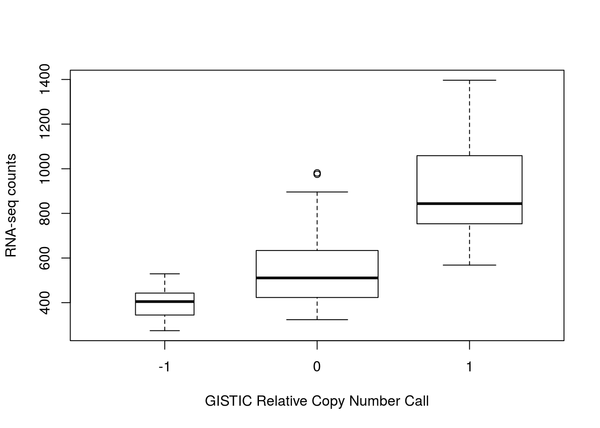

10 220: Workflow for multi-omics analysis with MultiAssayExperiment
10.1 Instructor names and contact information
- Marcel Ramos1516 (marcel.ramos@roswellpark.org)
- Ludwig Geistlinger17
- Levi Waldron18
10.2 Workshop Description
This workshop demonstrates data management and analyses of multiple assays associated with a single set of biological specimens, using the MultiAssayExperiment data class and methods. It introduces the RaggedExperiment data class, which provides efficient and powerful operations for representation of copy number and mutation and variant data that are represented by different genomic ranges for each specimen.
10.2.1 Pre-requisites
- Basic knowledge of R syntax
- Familiarity with the GRanges and SummarizedExperiment classes
- Familiarity with ’omics data types including copy number and gene expression
10.2.2 Workshop Participation
Students will have a chance to build a MultiAssayExperiment object from scratch, and will also work with more complex objects provided by the curatedTCGAData package.
10.2.3 R/Bioconductor packages used
- MultiAssayExperiment
- GenomicRanges
- RaggedExperiment
- curatedTCGAData
- SummarizedExperiment
- TCGAutils
- UpSetR
- AnnotationFilter
- EnsDb.Hsapiens.v86
- survival
- survminer
- pheatmap
library(MultiAssayExperiment)
library(GenomicRanges)
library(RaggedExperiment)
library(curatedTCGAData)
library(GenomicDataCommons)
library(SummarizedExperiment)
library(SingleCellExperiment)
library(TCGAutils)
library(UpSetR)
library(mirbase.db)
library(AnnotationFilter)
library(EnsDb.Hsapiens.v86)
library(survival)
library(survminer)
library(pheatmap)10.2.4 Time outline
1h 45m total
| Activity | Time |
|---|---|
| Overview of key data classes | 25m |
| Working with RaggedExperiment | 20m |
| Building a MultiAssayExperiment from scratch | 10m |
| TCGA multi-assay dataset | 10m |
| Subsetting and reshaping multi-assay data | 20m |
| Plotting, correlation, and other analyses | 20m |
10.3 Workshop goals and objectives
10.3.1 Learning goals
- identify appropriate data structures for different ’omics data types
- gain familiarity with GRangesList and RaggedExperiment
10.3.2 Learning objectives
- use curatedTCGAData to create custom TCGA MultiAssayExperiment objects
- create a MultiAssayExperiment for TCGA or other multi’omics data
- perform subsetting, reshaping, growing, and extraction of a MultiAssayExperiment
- link MultiAssayExperiment data with packages for differential expression, machine learning, and plotting
10.4 Overview of key data classes
This section summarizes three fundamental data classes for the representation of multi-omics experiments.
10.4.1 (Ranged)SummarizedExperiment

Figure 10.1: A matrix-like container where rows represent features of interest and columns represent samples. The objects contain one or more assays, each represented by a matrix-like object of numeric or other mode.
SummarizedExperiment is the most important Bioconductor class for matrix-like experimental data, including from RNA sequencing and microarray experiments. It can store multiple experimental data matrices of identical dimensions, with associated metadata on the rows/genes/transcripts/other measurements (rowData), column/sample phenotype or clinical data (colData), and the overall experiment (metadata). The derivative class RangedSummarizedExperiment associates a GRanges or GRangesList vector with the rows. These classes supersede the use of ExpressionSet. Note that many other classes for experimental data are actually derived from SummarizedExperiment; for example, the SingleCellExperiment class for single-cell RNA sequencing experiments extends RangedSummarizedExperiment, which in turn extends SummarizedExperiment:
library(SingleCellExperiment)
extends("SingleCellExperiment")
#> [1] "SingleCellExperiment" "RangedSummarizedExperiment"
#> [3] "SummarizedExperiment" "Vector"
#> [5] "Annotated"Thus, although SingleCellExperiment provides additional methods over RangedSummarizedExperiment, it also inherits all the methods of SummarizedExperiment and RangedSummarizedExperiment, so everything you learn about SummarizedExperiment will be applicable to SingleCellExperiment.
10.4.2 RaggedExperiment
RaggedExperiment is a flexible data representation for segmented copy number, somatic mutations such as represented in .vcf files, and other ragged array schema for genomic location data. Like the GRangesList class from GenomicRanges, RaggedExperiment can be used to represent differing genomic ranges on each of a set of samples. In fact, RaggedExperiment contains a GRangesList:
showClass("RaggedExperiment")
#> Class "RaggedExperiment" [package "RaggedExperiment"]
#>
#> Slots:
#>
#> Name: assays rowidx colidx metadata
#> Class: GRangesList integer integer list
#>
#> Extends: "Annotated"However, RaggedExperiment provides a flexible set of Assay methods to support transformation of such data to matrix format.

Figure 10.2: RaggedExperiment object schematic. Rows and columns represent genomic ranges and samples, respectively. Assay operations can be performed with (from left to right) compactAssay, qreduceAssay, and sparseAssay.
10.4.3 MultiAssayExperiment
MultiAssayExperiment is an integrative container for coordinating multi-omics experiment data on a set of biological specimens. As much as possible, its methods adopt the same vocabulary as SummarizedExperiment. A MultiAssayExperiment can contain any number of assays with different representations. Assays may be ID-based, where measurements are indexed identifiers of genes, microRNA, proteins, microbes, etc. Alternatively, assays may be range-based, where measurements correspond to genomic ranges that can be represented as GRanges objects, such as gene expression or copy number.
For ID-based assays, there is no requirement that the same IDs be present for different experiments. For range-based assays, there is also no requirement that the same ranges be present for different experiments; furthermore, it is possible for different samples within an experiment to be represented by different ranges. The following data classes have been tested to work as elements of a MultiAssayExperiment:
matrix: the most basic class for ID-based datasets, could be used for example for gene expression summarized per-gene, microRNA, metabolomics, or microbiome data.SummarizedExperimentand derived methods: described above, could be used for miRNA, gene expression, proteomics, or any matrix-like data where measurements are represented by IDs.RangedSummarizedExperiment: described above, could be used for gene expression, methylation, or other data types referring to genomic positions.ExpressionSet: Another rich representation for ID-based datasets, supported only for legacy reasonsRaggedExperiment: described above, for non-rectangular (ragged) ranged-based datasets such as segmented copy number, where segmentation of copy number alterations occurs and different genomic locations in each sample.RangedVcfStack: For VCF archives broken up by chromosome (seeVcfStackclass defined in theGenomicFilespackage)DelayedMatrix: An on-disk representation of matrix-like objects for large datasets. It reduces memory usage and optimizes performance with delayed operations. This class is part of theDelayedArraypackage.
Note that any data class extending these classes, and in fact any data class supporting row and column names and subsetting can be used as an element of a MultiAssayExperiment.
![MultiAssayExperiment object schematic. colData provides data about the patients, cell lines, or other biological units, with one row per unit and one column per variable. The experiments are a list of assay datasets of arbitrary class. The sampleMap relates each column (observation) in ExperimentList to exactly one row (biological unit) in colData; however, one row of colData may map to zero, one, or more columns per assay, allowing for missing and replicate assays. sampleMap allows for per-assay sample naming conventions. Metadata can be used to store information in arbitrary format about the MultiAssayExperiment. Green stripes indicate a mapping of one subject to multiple observations across experiments.](Ramos_MultiAssayExperiment/MultiAssayExperiment.png)
Figure 10.3: MultiAssayExperiment object schematic. colData provides data about the patients, cell lines, or other biological units, with one row per unit and one column per variable. The experiments are a list of assay datasets of arbitrary class. The sampleMap relates each column (observation) in ExperimentList to exactly one row (biological unit) in colData; however, one row of colData may map to zero, one, or more columns per assay, allowing for missing and replicate assays. sampleMap allows for per-assay sample naming conventions. Metadata can be used to store information in arbitrary format about the MultiAssayExperiment. Green stripes indicate a mapping of one subject to multiple observations across experiments.
10.5 Working with RaggedExperiment
You can skip this section if you prefer to focus on the functionality of MultiAssayExperiment. In most use cases, you would likely convert a RaggedExperiment to matrix or RangedSummarizedExperiment using one of the Assay functions below, and either concatenate this rectangular object to the MultiAssayExperiment or use it to replace the RaggedExperiment.
10.5.1 Constructing a RaggedExperiment object
We start with a toy example of two GRanges objects, providing ranges on two chromosomes in two samples:
sample1 <- GRanges(
c(A = "chr1:1-10:-", B = "chr1:8-14:+", C = "chr1:15-18:+"),
score = 3:5, type=c("germline", "somatic", "germline"))
sample2 <- GRanges(
c(D = "chr1:1-10:-", E = "chr1:11-18:+"),
score = 11:12, type=c("germline", "somatic"))Include column data colData to describe the samples:
colDat <- DataFrame(id=1:2, status = factor(c("control", "case")))The RaggedExperiment can be constructed from individual Granges:
(ragexp <- RaggedExperiment(
sample1 = sample1,
sample2 = sample2,
colData = colDat))
#> class: RaggedExperiment
#> dim: 5 2
#> assays(2): score type
#> rownames(5): A B C D E
#> colnames(2): sample1 sample2
#> colData names(2): id statusOr from a GRangesList:
grl <- GRangesList(sample1=sample1, sample2=sample2)
ragexp2 <- RaggedExperiment(grl, colData = colDat)
identical(ragexp, ragexp2)
#> [1] TRUENote that the original ranges are is represented as the rowRanges of the RaggedExperiment:
rowRanges(ragexp)
#> GRanges object with 5 ranges and 0 metadata columns:
#> seqnames ranges strand
#> <Rle> <IRanges> <Rle>
#> A chr1 1-10 -
#> B chr1 8-14 +
#> C chr1 15-18 +
#> D chr1 1-10 -
#> E chr1 11-18 +
#> -------
#> seqinfo: 1 sequence from an unspecified genome; no seqlengths10.5.2 *Assay functions
A suite of *Assay operations allow users to resize the matrix-like representation of ranges to varying row dimensions (see RaggedExperiment Figure for a visual example).
The four main Assay functions for converting to matrix are:
- sparseAssay: leave ranges exactly as-is
- compactAssay: combine identical ranges
- disjoinAssay: disjoin ranges that overlap across samples
- qreduceAssay: find overlaps with provided “query” ranges
These each have a corresponding function for conversion to RangedSummarizedExperiment.
10.5.2.1 sparseAssay
The most straightforward matrix representation of a RaggedExperiment will return a matrix with the number of rows equal to the total number of ranges defined across all samples. i.e. the 5 rows of the sparseAssay result:
sparseAssay(ragexp)
#> sample1 sample2
#> A 3 NA
#> B 4 NA
#> C 5 NA
#> D NA 11
#> E NA 12correspond to the ranges of the unlisted GRangesList:
unlist(grl)
#> GRanges object with 5 ranges and 2 metadata columns:
#> seqnames ranges strand | score type
#> <Rle> <IRanges> <Rle> | <integer> <character>
#> sample1.A chr1 1-10 - | 3 germline
#> sample1.B chr1 8-14 + | 4 somatic
#> sample1.C chr1 15-18 + | 5 germline
#> sample2.D chr1 1-10 - | 11 germline
#> sample2.E chr1 11-18 + | 12 somatic
#> -------
#> seqinfo: 1 sequence from an unspecified genome; no seqlengthsThe rownames of the sparseAssay result are equal to the names of the GRanges elements. The values in the matrix returned by sparseAssay correspond to the first columns of the mcols of each GRangesList element, in this case the “score” column.
Note, this is the default assay() method of RaggedExperiment:
assay(ragexp, "score")
#> sample1 sample2
#> A 3 NA
#> B 4 NA
#> C 5 NA
#> D NA 11
#> E NA 12
assay(ragexp, "type")
#> sample1 sample2
#> A "germline" NA
#> B "somatic" NA
#> C "germline" NA
#> D NA "germline"
#> E NA "somatic"10.5.2.2 compactAssay
The dimensions of the compactAssay result differ from that of the sparseAssay result only if there are identical ranges in different samples. Identical ranges are placed in the same row in the output. Ranges with any difference in start, end, or strand, will be kept on different rows. Non-disjoint ranges are not collapsed.
compactAssay(ragexp)
#> sample1 sample2
#> chr1:8-14:+ 4 NA
#> chr1:11-18:+ NA 12
#> chr1:15-18:+ 5 NA
#> chr1:1-10:- 3 11
compactAssay(ragexp, "type")
#> sample1 sample2
#> chr1:8-14:+ "somatic" NA
#> chr1:11-18:+ NA "somatic"
#> chr1:15-18:+ "germline" NA
#> chr1:1-10:- "germline" "germline"Note that row names are constructed from the ranges, and the names of the GRanges vectors are lost, unlike in the sparseAssay result.
10.5.2.3 disjoinAssay
This function is similar to compactAssay except the rows are disjoint19 ranges. Elements of the matrix are summarized by applying the simplifyDisjoin functional argument to assay values of overlapping ranges.
disjoinAssay(ragexp, simplifyDisjoin = mean)
#> sample1 sample2
#> chr1:8-10:+ 4 NA
#> chr1:11-14:+ 4 12
#> chr1:15-18:+ 5 12
#> chr1:1-10:- 3 1110.5.2.4 qreduceAssay
The qreduceAssay function is the most complicated but likely the most useful of the RaggedExperiment Assay functions. It requires you to provide a query argument that is a GRanges vector, and the rows of the resulting matrix correspond to the elements of this GRanges. The returned matrix will have dimensions length(query) by ncol(x). Elements of the resulting matrix correspond to the overlap of the i th query range in the j th sample, summarized according to the simplifyReduce functional argument. This can be useful, for example, to calculate per-gene copy number or mutation status by providing the genomic ranges of every gene as the query.
The simplifyReduce argument in qreduceAssay allows the user to summarize overlapping regions with a custom method for the given “query” region of interest. We provide one for calculating a weighted average score per query range, where the weight is proportional to the overlap widths between overlapping ranges and a query range.
Note that there are three arguments to this function. See the documentation for additional details.
weightedmean <- function(scores, ranges, qranges)
{
isects <- pintersect(ranges, qranges)
sum(scores * width(isects)) / sum(width(isects))
}The call to qreduceAssay calculates the overlaps between the ranges of each sample:
grl
#> GRangesList object of length 2:
#> $sample1
#> GRanges object with 3 ranges and 2 metadata columns:
#> seqnames ranges strand | score type
#> <Rle> <IRanges> <Rle> | <integer> <character>
#> A chr1 1-10 - | 3 germline
#> B chr1 8-14 + | 4 somatic
#> C chr1 15-18 + | 5 germline
#>
#> $sample2
#> GRanges object with 2 ranges and 2 metadata columns:
#> seqnames ranges strand | score type
#> D chr1 1-10 - | 11 germline
#> E chr1 11-18 + | 12 somatic
#>
#> -------
#> seqinfo: 1 sequence from an unspecified genome; no seqlengthswith the query ranges (an arbitrary set is defined here for demonstration): First create a demonstration “query” region of interest:
(query <- GRanges(c("chr1:1-14:-", "chr1:15-18:+")))
#> GRanges object with 2 ranges and 0 metadata columns:
#> seqnames ranges strand
#> <Rle> <IRanges> <Rle>
#> [1] chr1 1-14 -
#> [2] chr1 15-18 +
#> -------
#> seqinfo: 1 sequence from an unspecified genome; no seqlengthsusing the simplifyReduce function to resolve overlapping ranges and return a matrix with rows corresponding to the query:
qreduceAssay(ragexp, query, simplifyReduce = weightedmean)
#> sample1 sample2
#> chr1:1-14:- 3 11
#> chr1:15-18:+ 5 1210.5.3 Conversion to RangedSummarizedExperiment
These methods all have corresponding methods to return a RangedSummarizedExperiment and preserve the colData:
sparseSummarizedExperiment(ragexp)
compactSummarizedExperiment(ragexp)
disjoinSummarizedExperiment(ragexp, simplify = mean)
qreduceSummarizedExperiment(ragexp, query=query, simplify=weightedmean)10.6 Working with MultiAssayExperiment
10.7 API cheat sheet

Figure 10.4: The MultiAssayExperiment API for construction, access, subsetting, management, and reshaping to formats for application of R/Bioconductor graphics and analysis packages.
10.7.1 The MultiAssayExperiment miniACC demo object
Get started by trying out MultiAssayExperiment using a subset of the TCGA adrenocortical carcinoma (ACC) dataset provided with the package. This dataset provides five assays on 92 patients, although all five assays were not performed for every patient:
- RNASeq2GeneNorm: gene mRNA abundance by RNA-seq
- gistict: GISTIC genomic copy number by gene
- RPPAArray: protein abundance by Reverse Phase Protein Array
- Mutations: non-silent somatic mutations by gene
- miRNASeqGene: microRNA abundance by microRNA-seq.
data(miniACC)
miniACC
#> A MultiAssayExperiment object of 5 listed
#> experiments with user-defined names and respective classes.
#> Containing an ExperimentList class object of length 5:
#> [1] RNASeq2GeneNorm: SummarizedExperiment with 198 rows and 79 columns
#> [2] gistict: SummarizedExperiment with 198 rows and 90 columns
#> [3] RPPAArray: SummarizedExperiment with 33 rows and 46 columns
#> [4] Mutations: matrix with 97 rows and 90 columns
#> [5] miRNASeqGene: SummarizedExperiment with 471 rows and 80 columns
#> Features:
#> experiments() - obtain the ExperimentList instance
#> colData() - the primary/phenotype DataFrame
#> sampleMap() - the sample availability DataFrame
#> `$`, `[`, `[[` - extract colData columns, subset, or experiment
#> *Format() - convert into a long or wide DataFrame
#> assays() - convert ExperimentList to a SimpleList of matrices10.7.2 colData - information biological units
This slot is a DataFrame describing the characteristics of biological units, for example clinical data for patients. In the prepared datasets from [The Cancer Genome Atlas][], each row is one patient and each column is a clinical, pathological, subtype, or other variable. The $ function provides a shortcut for accessing or setting colData columns.
colData(miniACC)[1:4, 1:4]
#> DataFrame with 4 rows and 4 columns
#> patientID years_to_birth vital_status days_to_death
#> <character> <integer> <integer> <integer>
#> TCGA-OR-A5J1 TCGA-OR-A5J1 58 1 1355
#> TCGA-OR-A5J2 TCGA-OR-A5J2 44 1 1677
#> TCGA-OR-A5J3 TCGA-OR-A5J3 23 0 NA
#> TCGA-OR-A5J4 TCGA-OR-A5J4 23 1 423
table(miniACC$race)
#>
#> asian black or african american
#> 2 1
#> white
#> 78Key points about the colData:
- Each row maps to zero or more observations in each experiment in the
ExperimentList, below. - One row per biological unit
MultiAssayExperimentsupports both missing observations and replicate observations, ie one row ofcolDatacan map to 0, 1, or more columns of any of the experimental data matrices.- therefore you could treat replicate observations as one or multiple rows of
colData, and this will result in different behaviors of functions you will learn later like subsetting,duplicated(), andwideFormat(). - multiple time points, or distinct biological replicates, should probably be separate rows of the
colData.
10.7.3 ExperimentList - experiment data
A base list or ExperimentList object containing the experimental datasets for the set of samples collected. This gets converted into a class ExperimentList during construction.
experiments(miniACC)
#> ExperimentList class object of length 5:
#> [1] RNASeq2GeneNorm: SummarizedExperiment with 198 rows and 79 columns
#> [2] gistict: SummarizedExperiment with 198 rows and 90 columns
#> [3] RPPAArray: SummarizedExperiment with 33 rows and 46 columns
#> [4] Mutations: matrix with 97 rows and 90 columns
#> [5] miRNASeqGene: SummarizedExperiment with 471 rows and 80 columnsKey points:
- One matrix-like dataset per list element (although they do not even need to be matrix-like, see for example the
RaggedExperimentpackage) - One matrix column per assayed specimen. Each matrix column must correspond to exactly one row of
colData: in other words, you must know which patient or cell line the observation came from. However, multiple columns can come from the same patient, or there can be no data for that patient. - Matrix rows correspond to variables, e.g. genes or genomic ranges
ExperimentListelements can be genomic range-based (e.g.SummarizedExperiment::RangedSummarizedExperiment-classorRaggedExperiment::RaggedExperiment-class) or ID-based data (e.g.SummarizedExperiment::SummarizedExperiment-class,Biobase::eSet-classbase::matrix-class,DelayedArray::DelayedArray-class, and derived classes)- Any data class can be included in the
ExperimentList, as long as it supports: single-bracket subsetting ([),dimnames, anddim. Most data classes defined in Bioconductor meet these requirements.
10.7.4 sampleMap - relationship graph
sampleMap is a graph representation of the relationship between biological units and experimental results. In simple cases where the column names of ExperimentList data matrices match the row names of colData, the user won’t need to specify or think about a sample map, it can be created automatically by the MultiAssayExperiment constructor. sampleMap is a simple three-column DataFrame:
assaycolumn: the name of the assay, and found in the names ofExperimentListlist namesprimarycolumn: identifiers of patients or biological units, and found in the row names ofcolDatacolnamecolumn: identifiers of assay results, and found in the column names ofExperimentListelements Helper functions are available for creating a map from a list. See?listToMap
sampleMap(miniACC)
#> DataFrame with 385 rows and 3 columns
#> assay primary colname
#> <factor> <character> <character>
#> 1 RNASeq2GeneNorm TCGA-OR-A5J1 TCGA-OR-A5J1-01A-11R-A29S-07
#> 2 RNASeq2GeneNorm TCGA-OR-A5J2 TCGA-OR-A5J2-01A-11R-A29S-07
#> 3 RNASeq2GeneNorm TCGA-OR-A5J3 TCGA-OR-A5J3-01A-11R-A29S-07
#> 4 RNASeq2GeneNorm TCGA-OR-A5J5 TCGA-OR-A5J5-01A-11R-A29S-07
#> 5 RNASeq2GeneNorm TCGA-OR-A5J6 TCGA-OR-A5J6-01A-31R-A29S-07
#> ... ... ... ...
#> 381 miRNASeqGene TCGA-PA-A5YG TCGA-PA-A5YG-01A-11R-A29W-13
#> 382 miRNASeqGene TCGA-PK-A5H8 TCGA-PK-A5H8-01A-11R-A29W-13
#> 383 miRNASeqGene TCGA-PK-A5H9 TCGA-PK-A5H9-01A-11R-A29W-13
#> 384 miRNASeqGene TCGA-PK-A5HA TCGA-PK-A5HA-01A-11R-A29W-13
#> 385 miRNASeqGene TCGA-PK-A5HB TCGA-PK-A5HB-01A-11R-A29W-13Key points:
- relates experimental observations (
colnames) tocolData - permits experiment-specific sample naming, missing, and replicate observations
10.7.5 metadata
Metadata can be used to keep additional information about patients, assays performed on individuals or on the entire cohort, or features such as genes, proteins, and genomic ranges. There are many options available for storing metadata. First, MultiAssayExperiment has its own metadata for describing the entire experiment:
metadata(miniACC)
#> $title
#> [1] "Comprehensive Pan-Genomic Characterization of Adrenocortical Carcinoma"
#>
#> $PMID
#> [1] "27165744"
#>
#> $sourceURL
#> [1] "http://s3.amazonaws.com/multiassayexperiments/accMAEO.rds"
#>
#> $RPPAfeatureDataURL
#> [1] "http://genomeportal.stanford.edu/pan-tcga/show_target_selection_file?filename=Allprotein.txt"
#>
#> $colDataExtrasURL
#> [1] "http://www.cell.com/cms/attachment/2062093088/2063584534/mmc3.xlsx"Additionally, the DataFrame class used by sampleMap and colData, as well as the ExperimentList class, similarly support metadata. Finally, many experimental data objects that can be used in the ExperimentList support metadata. These provide flexible options to users and to developers of derived classes.
10.8 MultiAssayExperiment Subsetting
10.8.1 Single bracket [
In pseudo code below, the subsetting operations work on the rows of the following indices: 1. i experimental data rows 2. j the primary names or the column names (entered as a list or List) 3. k assay
multiassayexperiment[i = rownames, j = primary or colnames, k = assay]Subsetting operations always return another MultiAssayExperiment. For example, the following will return any rows named “MAPK14” or “IGFBP2”, and remove any assays where no rows match:
miniACC[c("MAPK14", "IGFBP2"), , ]The following will keep only patients of pathological stage iv, and all their associated assays:
miniACC[, miniACC$pathologic_stage == "stage iv", ]
#> harmonizing input:
#> removing 311 sampleMap rows with 'colname' not in colnames of experiments
#> removing 74 colData rownames not in sampleMap 'primary'And the following will keep only the RNA-seq dataset, and only patients for which this assay is available:
miniACC[, , "RNASeq2GeneNorm"]
#> harmonizing input:
#> removing 13 colData rownames not in sampleMap 'primary'10.8.2 Subsetting by genomic ranges
If any ExperimentList objects have features represented by genomic ranges (e.g. RangedSummarizedExperiment, RaggedExperiment), then a GRanges object in the first subsetting position will subset these objects as in GenomicRanges::findOverlaps(). Any non-ranged ExperimentList element will be subset to zero rows.
10.8.3 Double bracket [[
The “double bracket” method ([[) is a convenience function for extracting a single element of the MultiAssayExperiment ExperimentList. It avoids the use of experiments(mae)[[1L]]. For example, both of the following extract the ExpressionSet object containing RNA-seq data:
miniACC[[1L]] #or equivalently, miniACC[["RNASeq2GeneNorm"]]
#> class: SummarizedExperiment
#> dim: 198 79
#> metadata(3): experimentData annotation protocolData
#> assays(1): exprs
#> rownames(198): DIRAS3 MAPK14 ... SQSTM1 KCNJ13
#> rowData names(0):
#> colnames(79): TCGA-OR-A5J1-01A-11R-A29S-07
#> TCGA-OR-A5J2-01A-11R-A29S-07 ... TCGA-PK-A5HA-01A-11R-A29S-07
#> TCGA-PK-A5HB-01A-11R-A29S-07
#> colData names(0):10.9 Complete cases
complete.cases() shows which patients have complete data for all assays:
summary(complete.cases(miniACC))
#> Mode FALSE TRUE
#> logical 49 43The above logical vector could be used for patient subsetting. More simply, intersectColumns() will select complete cases and rearrange each ExperimentList element so its columns correspond exactly to rows of colData in the same order:
accmatched = intersectColumns(miniACC)
#> harmonizing input:
#> removing 170 sampleMap rows with 'colname' not in colnames of experiments
#> removing 49 colData rownames not in sampleMap 'primary'Note, the column names of the assays in accmatched are not the same because of assay-specific identifiers, but they have been automatically re-arranged to correspond to the same patients. In these TCGA assays, the first three - delimited positions correspond to patient, ie the first patient is TCGA-OR-A5J2:
colnames(accmatched)
#> CharacterList of length 5
#> [["RNASeq2GeneNorm"]] TCGA-OR-A5J2-01A-11R-A29S-07 ...
#> [["gistict"]] TCGA-OR-A5J2-01A-11D-A29H-01 ...
#> [["RPPAArray"]] TCGA-OR-A5J2-01A-21-A39K-20 ...
#> [["Mutations"]] TCGA-OR-A5J2-01A-11D-A29I-10 ...
#> [["miRNASeqGene"]] TCGA-OR-A5J2-01A-11R-A29W-13 ...10.10 Row names that are common across assays
intersectRows() keeps only rows that are common to each assay, and aligns them in identical order. For example, to keep only genes where data are available for RNA-seq, GISTIC copy number, and somatic mutations:
accmatched2 <- intersectRows(miniACC[, , c("RNASeq2GeneNorm", "gistict", "Mutations")])
rownames(accmatched2)
#> CharacterList of length 3
#> [["RNASeq2GeneNorm"]] DIRAS3 G6PD KDR ERBB3 ... RET CDKN2A MACC1 CHGA
#> [["gistict"]] DIRAS3 G6PD KDR ERBB3 AKT1S1 ... PREX1 RET CDKN2A MACC1 CHGA
#> [["Mutations"]] DIRAS3 G6PD KDR ERBB3 AKT1S1 ... RET CDKN2A MACC1 CHGA10.11 Extraction
10.11.1 assay and assays
The assay and assays methods follow SummarizedExperiment convention. The assay (singular) method will extract the first element of the ExperimentList and will return a matrix.
class(assay(miniACC))
#> [1] "matrix"The assays (plural) method will return a SimpleList of the data with each element being a matrix.
assays(miniACC)
#> List of length 5
#> names(5): RNASeq2GeneNorm gistict RPPAArray Mutations miRNASeqGeneKey point:
- Whereas the
[[returned an assay as its original class,assay()andassays()convert the assay data to matrix form.
10.12 Summary of slots and accessors
Slot in the MultiAssayExperiment can be accessed or set using their accessor functions:
| Slot | Accessor |
|---|---|
ExperimentList |
experiments() |
colData |
colData() and $ * |
sampleMap |
sampleMap() |
metadata |
metadata() |
__*__ The $ operator on a MultiAssayExperiment returns a single column of the colData.
10.13 Transformation / reshaping
The longFormat or wideFormat functions will “reshape” and combine experiments with each other and with colData into one DataFrame. These functions provide compatibility with most of the common R/Bioconductor functions for regression, machine learning, and visualization.
10.13.1 longFormat
In long format a single column provides all assay results, with additional optional colData columns whose values are repeated as necessary. Here assay is the name of the ExperimentList element, primary is the patient identifier (rowname of colData), rowname is the assay rowname (in this case genes), colname is the assay-specific identifier (column name), value is the numeric measurement (gene expression, copy number, presence of a non-silent mutation, etc), and following these are the vital_status and days_to_death colData columns that have been added:
longFormat(miniACC[c("TP53", "CTNNB1"), , ],
colDataCols = c("vital_status", "days_to_death"))
#> DataFrame with 518 rows and 7 columns
#> assay primary rowname colname
#> <character> <character> <character> <character>
#> 1 RNASeq2GeneNorm TCGA-OR-A5J1 TP53 TCGA-OR-A5J1-01A-11R-A29S-07
#> 2 RNASeq2GeneNorm TCGA-OR-A5J1 CTNNB1 TCGA-OR-A5J1-01A-11R-A29S-07
#> 3 RNASeq2GeneNorm TCGA-OR-A5J2 TP53 TCGA-OR-A5J2-01A-11R-A29S-07
#> 4 RNASeq2GeneNorm TCGA-OR-A5J2 CTNNB1 TCGA-OR-A5J2-01A-11R-A29S-07
#> 5 RNASeq2GeneNorm TCGA-OR-A5J3 TP53 TCGA-OR-A5J3-01A-11R-A29S-07
#> ... ... ... ... ...
#> 514 Mutations TCGA-PK-A5HA CTNNB1 TCGA-PK-A5HA-01A-11D-A29I-10
#> 515 Mutations TCGA-PK-A5HB TP53 TCGA-PK-A5HB-01A-11D-A29I-10
#> 516 Mutations TCGA-PK-A5HB CTNNB1 TCGA-PK-A5HB-01A-11D-A29I-10
#> 517 Mutations TCGA-PK-A5HC TP53 TCGA-PK-A5HC-01A-11D-A30A-10
#> 518 Mutations TCGA-PK-A5HC CTNNB1 TCGA-PK-A5HC-01A-11D-A30A-10
#> value vital_status days_to_death
#> <numeric> <integer> <integer>
#> 1 563.4006 1 1355
#> 2 5634.4669 1 1355
#> 3 165.4811 1 1677
#> 4 62658.3913 1 1677
#> 5 956.3028 0 NA
#> ... ... ... ...
#> 514 0 0 NA
#> 515 0 0 NA
#> 516 0 0 NA
#> 517 0 0 NA
#> 518 0 0 NA10.13.2 wideFormat
In wide format, each feature from each assay goes in a separate column, with one row per primary identifier (patient). Here, each variable becomes a new column:
wideFormat(miniACC[c("TP53", "CTNNB1"), , ],
colDataCols = c("vital_status", "days_to_death"))
#> DataFrame with 92 rows and 9 columns
#> primary vital_status days_to_death RNASeq2GeneNorm_CTNNB1
#> <character> <integer> <integer> <numeric>
#> 1 TCGA-OR-A5J1 1 1355 5634.4669
#> 2 TCGA-OR-A5J2 1 1677 62658.3913
#> 3 TCGA-OR-A5J3 0 NA 6337.4256
#> 4 TCGA-OR-A5J4 1 423 NA
#> 5 TCGA-OR-A5J5 1 365 5979.055
#> ... ... ... ... ...
#> 88 TCGA-PK-A5H9 0 NA 5258.9863
#> 89 TCGA-PK-A5HA 0 NA 8120.1654
#> 90 TCGA-PK-A5HB 0 NA 5257.8148
#> 91 TCGA-PK-A5HC 0 NA NA
#> 92 TCGA-P6-A5OG 1 383 6390.0997
#> RNASeq2GeneNorm_TP53 gistict_CTNNB1 gistict_TP53 Mutations_CTNNB1
#> <numeric> <numeric> <numeric> <numeric>
#> 1 563.4006 0 0 0
#> 2 165.4811 1 0 1
#> 3 956.3028 0 0 0
#> 4 NA 0 1 0
#> 5 1169.6359 0 0 0
#> ... ... ... ... ...
#> 88 890.8663 0 0 0
#> 89 683.5722 0 -1 0
#> 90 237.3697 -1 -1 0
#> 91 NA 1 1 0
#> 92 815.3446 1 -1 NA
#> Mutations_TP53
#> <numeric>
#> 1 0
#> 2 1
#> 3 0
#> 4 0
#> 5 0
#> ... ...
#> 88 0
#> 89 0
#> 90 0
#> 91 0
#> 92 NA10.14 MultiAssayExperiment class construction and concatenation
10.14.1 MultiAssayExperiment constructor function
The MultiAssayExperiment constructor function can take three arguments:
experiments- AnExperimentListorlistof datacolData- ADataFramedescribing the patients (or cell lines, or other biological units)sampleMap- ADataFrameofassay,primary, andcolnameidentifiers
The miniACC object can be reconstructed as follows:
MultiAssayExperiment(experiments=experiments(miniACC),
colData=colData(miniACC),
sampleMap=sampleMap(miniACC),
metadata=metadata(miniACC))
#> A MultiAssayExperiment object of 5 listed
#> experiments with user-defined names and respective classes.
#> Containing an ExperimentList class object of length 5:
#> [1] RNASeq2GeneNorm: SummarizedExperiment with 198 rows and 79 columns
#> [2] gistict: SummarizedExperiment with 198 rows and 90 columns
#> [3] RPPAArray: SummarizedExperiment with 33 rows and 46 columns
#> [4] Mutations: matrix with 97 rows and 90 columns
#> [5] miRNASeqGene: SummarizedExperiment with 471 rows and 80 columns
#> Features:
#> experiments() - obtain the ExperimentList instance
#> colData() - the primary/phenotype DataFrame
#> sampleMap() - the sample availability DataFrame
#> `$`, `[`, `[[` - extract colData columns, subset, or experiment
#> *Format() - convert into a long or wide DataFrame
#> assays() - convert ExperimentList to a SimpleList of matrices10.14.2 prepMultiAssay - Constructor function helper
The prepMultiAssay function allows the user to diagnose typical problems when creating a MultiAssayExperiment object. See ?prepMultiAssay for more details.
10.14.3 c - concatenate to MultiAssayExperiment
The c function allows the user to concatenate an additional experiment to an existing MultiAssayExperiment. The optional sampleMap argument allows concatenating an assay whose column names do not match the row names of colData. For convenience, the mapFrom argument allows the user to map from a particular experiment provided that the order of the colnames is in the same. A warning will be issued to make the user aware of this assumption. For example, to concatenate a matrix of log2-transformed RNA-seq results:
miniACC2 <- c(miniACC, log2rnaseq = log2(assays(miniACC)$RNASeq2GeneNorm), mapFrom=1L)
#> Warning in .local(x, ...): Assuming column order in the data provided
#> matches the order in 'mapFrom' experiment(s) colnames
experiments(miniACC2)
#> ExperimentList class object of length 6:
#> [1] RNASeq2GeneNorm: SummarizedExperiment with 198 rows and 79 columns
#> [2] gistict: SummarizedExperiment with 198 rows and 90 columns
#> [3] RPPAArray: SummarizedExperiment with 33 rows and 46 columns
#> [4] Mutations: matrix with 97 rows and 90 columns
#> [5] miRNASeqGene: SummarizedExperiment with 471 rows and 80 columns
#> [6] log2rnaseq: matrix with 198 rows and 79 columns10.14.4 Building a MultiAssayExperiment from scratch
To start from scratch building your own MultiAssayExperiment, see the package Coordinating Analysis of Multi-Assay Experiments vignette. The package cheat sheet is also helpful.
If anything is unclear, please ask a question at https://support.bioconductor.org/ or create an issue on the MultiAssayExperiment issue tracker.
10.15 The Cancer Genome Atlas (TCGA) as MultiAssayExperiment objects
Most unrestricted TCGA data are available as MultiAssayExperiment objects from the curatedTCGAData package. This represents a lot of harmonization!
library(curatedTCGAData)
curatedTCGAData("ACC")
#> ACC_CNASNP
#> "ACC_CNASNP-20160128.rda"
#> ACC_CNVSNP
#> "ACC_CNVSNP-20160128.rda"
#> ACC_GISTIC_AllByGene
#> "ACC_GISTIC_AllByGene-20160128.rda"
#> ACC_GISTIC_ThresholdedByGene
#> "ACC_GISTIC_ThresholdedByGene-20160128.rda"
#> ACC_Methylation
#> "ACC_Methylation-20160128.rda"
#> ACC_miRNASeqGene
#> "ACC_miRNASeqGene-20160128.rda"
#> ACC_Mutation
#> "ACC_Mutation-20160128.rda"
#> ACC_RNASeq2GeneNorm
#> "ACC_RNASeq2GeneNorm-20160128.rda"
#> ACC_RPPAArray
#> "ACC_RPPAArray-20160128.rda"
suppressMessages({
acc <- curatedTCGAData("ACC",
assays = c("miRNASeqGene", "RPPAArray", "Mutation", "RNASeq2GeneNorm", "CNVSNP"),
dry.run = FALSE)
})
acc
#> A MultiAssayExperiment object of 5 listed
#> experiments with user-defined names and respective classes.
#> Containing an ExperimentList class object of length 5:
#> [1] ACC_CNVSNP-20160128: RaggedExperiment with 21052 rows and 180 columns
#> [2] ACC_miRNASeqGene-20160128: SummarizedExperiment with 1046 rows and 80 columns
#> [3] ACC_Mutation-20160128: RaggedExperiment with 20166 rows and 90 columns
#> [4] ACC_RNASeq2GeneNorm-20160128: SummarizedExperiment with 20501 rows and 79 columns
#> [5] ACC_RPPAArray-20160128: SummarizedExperiment with 192 rows and 46 columns
#> Features:
#> experiments() - obtain the ExperimentList instance
#> colData() - the primary/phenotype DataFrame
#> sampleMap() - the sample availability DataFrame
#> `$`, `[`, `[[` - extract colData columns, subset, or experiment
#> *Format() - convert into a long or wide DataFrame
#> assays() - convert ExperimentList to a SimpleList of matricesThese objects contain most unrestricted TCGA assay and clinical / pathological data, as well as material curated from the supplements of published TCGA primary papers at the end of the colData columns:
dim(colData(acc))
#> [1] 92 822
tail(colnames(colData(acc)), 10)
#> [1] "MethyLevel" "miRNA.cluster" "SCNA.cluster"
#> [4] "protein.cluster" "COC" "OncoSign"
#> [7] "purity" "ploidy" "genome_doublings"
#> [10] "ADS"The TCGAutils package provides additional helper functions, see below.
10.16 Utilities for TCGA
Aside from the available reshaping functions already included in the MultiAssayExperiment package, the TCGAutils package provides additional helper functions for working with TCGA data.
10.16.1 “Simplification” of curatedTCGAData objects
A number of helper functions are available for managing datasets from curatedTCGAData. These include:
- Conversions of
SummarizedExperimenttoRangedSummarizedExperimentbased onTxDb.Hsapiens.UCSC.hg19.knownGenefor:mirToRanges: microRNAsymbolsToRanges: gene symbols
qreduceTCGA: convertRaggedExperimentobjects toRangedSummarizedExperimentwith one row per gene symbol, for:- segmented copy number datasets (“CNVSNP” and “CNASNP”)
- somatic mutation datasets (“Mutation”), with a value of 1 for any non-silent mutation and a value of 0 for no mutation or silent mutation
The simplifyTCGA function combines all of the above operations to create a more managable MultiAssayExperiment object and using RangedSummarizedExperiment assays where possible.
(simpa <- TCGAutils::simplifyTCGA(acc))
#>
#> 'select()' returned 1:1 mapping between keys and columns
#> 'select()' returned 1:many mapping between keys and columns
#> 'select()' returned 1:1 mapping between keys and columns
#> A MultiAssayExperiment object of 7 listed
#> experiments with user-defined names and respective classes.
#> Containing an ExperimentList class object of length 7:
#> [1] ACC_RPPAArray-20160128: SummarizedExperiment with 192 rows and 46 columns
#> [2] ACC_Mutation-20160128_simplified: RangedSummarizedExperiment with 22945 rows and 90 columns
#> [3] ACC_CNVSNP-20160128_simplified: RangedSummarizedExperiment with 22945 rows and 180 columns
#> [4] ACC_miRNASeqGene-20160128_ranged: RangedSummarizedExperiment with 1002 rows and 80 columns
#> [5] ACC_miRNASeqGene-20160128_unranged: SummarizedExperiment with 44 rows and 80 columns
#> [6] ACC_RNASeq2GeneNorm-20160128_ranged: RangedSummarizedExperiment with 17594 rows and 79 columns
#> [7] ACC_RNASeq2GeneNorm-20160128_unranged: SummarizedExperiment with 2907 rows and 79 columns
#> Features:
#> experiments() - obtain the ExperimentList instance
#> colData() - the primary/phenotype DataFrame
#> sampleMap() - the sample availability DataFrame
#> `$`, `[`, `[[` - extract colData columns, subset, or experiment
#> *Format() - convert into a long or wide DataFrame
#> assays() - convert ExperimentList to a SimpleList of matrices10.16.2 What types of samples are in the data?
Solution
The sampleTables function gives you an overview of samples in each assay:
sampleTables(acc)
#> $`ACC_CNVSNP-20160128`
#>
#> 01 10 11
#> 90 85 5
#>
#> $`ACC_miRNASeqGene-20160128`
#>
#> 01
#> 80
#>
#> $`ACC_Mutation-20160128`
#>
#> 01
#> 90
#>
#> $`ACC_RNASeq2GeneNorm-20160128`
#>
#> 01
#> 79
#>
#> $`ACC_RPPAArray-20160128`
#>
#> 01
#> 46
head(sampleTypes)
#> Code Definition Short.Letter.Code
#> 1 01 Primary Solid Tumor TP
#> 2 02 Recurrent Solid Tumor TR
#> 3 03 Primary Blood Derived Cancer - Peripheral Blood TB
#> 4 04 Recurrent Blood Derived Cancer - Bone Marrow TRBM
#> 5 05 Additional - New Primary TAP
#> 6 06 Metastatic TM10.16.3 Curated molecular subtypes
Is there subtype data available in the MultiAssayExperiment obtained from curatedTCGAData?
Solution
The getSubtypeMap function will show actual variable names found in colData that contain subtype information. This can only be obtained from MultiAssayExperiment objects provided by curatedTCGAData.
getSubtypeMap(acc)
#> ACC_annotations ACC_subtype
#> 1 Patient_ID SAMPLE
#> 2 histological_subtypes Histology
#> 3 mrna_subtypes C1A/C1B
#> 4 mrna_subtypes mRNA_K4
#> 5 cimp MethyLevel
#> 6 microrna_subtypes miRNA cluster
#> 7 scna_subtypes SCNA cluster
#> 8 protein_subtypes protein cluster
#> 9 integrative_subtypes COC
#> 10 mutation_subtypes OncoSign
head(colData(acc)$Histology)
#> [1] "Usual Type" "Usual Type" "Usual Type" "Usual Type" "Usual Type"
#> [6] "Usual Type"10.16.4 Converting TCGA UUIDs to barcodes and back
TCGAutils provides a number of ID translation functions. These allow the user to translate from either file or case UUIDs to TCGA barcodes and back. These functions work by querying the Genomic Data Commons API via the GenomicDataCommons package (thanks to Sean Davis). These include:
UUIDtoBarcode()barcodeToUUID()UUIDtoUUID()filenameToBarcode()
See the TCGAutils help pages for details.
10.16.5 Other TCGA data types
Helper functions to add TCGA exon files (legacy archive), copy number and GISTIC copy number calls to MultiAssayExperiment objects are also available in TCGAutils.
10.17 Plotting, correlation, and other analyses
These provide exercises and solutions using the miniACC dataset.
10.17.1 How many miniACC samples have data for each combination of assays?
Solution
The built-in upsetSamples creates an “upset” Venn diagram to answer this question:
upsetSamples(miniACC)
In this dataset only 43 samples have all 5 assays, 32 are missing reverse-phase protein (RPPAArray), 2 are missing Mutations, 1 is missing gistict, 12 have only mutations and gistict, etc.
10.17.2 Kaplan-meier plot stratified by pathology_N_stage
Create a Kaplan-meier plot, using pathology_N_stage as a stratifying variable.
Solution
The colData provides clinical data for things like a Kaplan-Meier plot for overall survival stratified by nodal stage.
Surv(miniACC$days_to_death, miniACC$vital_status)
#> [1] 1355 1677 NA+ 423 365 NA+ 490 579 NA+ 922 551
#> [12] 1750 NA+ 2105 NA+ 541 NA+ NA+ 490 NA+ NA+ 562
#> [23] NA+ NA+ NA+ NA+ NA+ NA+ 289 NA+ NA+ NA+ 552
#> [34] NA+ NA+ NA+ 994 NA+ NA+ 498 NA+ NA+ 344 NA+
#> [45] NA+ NA+ NA+ NA+ NA+ NA+ NA+ NA+ NA+ 391 125
#> [56] NA+ 1852 NA+ NA+ NA+ NA+ NA+ NA+ NA+ 1204 159
#> [67] 1197 662 445 NA+ 2385 436 1105 NA+ 1613 NA+ NA+
#> [78] 2405 NA+ NA+ NA+ NA+ NA+ 207 0 NA+ NA+ NA+
#> [89] NA+ NA+ NA+ 383And remove any patients missing overall survival information:
miniACCsurv <- miniACC[, complete.cases(miniACC$days_to_death, miniACC$vital_status), ]
#> harmonizing input:
#> removing 248 sampleMap rows with 'colname' not in colnames of experiments
#> removing 58 colData rownames not in sampleMap 'primary'fit <- survfit(Surv(days_to_death, vital_status) ~ pathology_N_stage, data = colData(miniACCsurv))
ggsurvplot(fit, data = colData(miniACCsurv), risk.table = TRUE)
10.17.3 Multivariate Cox regression including RNA-seq, copy number, and pathology
Choose the EZH2 gene for demonstration. This subsetting will drop assays with no row named EZH2:
wideacc = wideFormat(miniACC["EZH2", , ],
colDataCols=c("vital_status", "days_to_death", "pathology_N_stage"))
wideacc$y = Surv(wideacc$days_to_death, wideacc$vital_status)
head(wideacc)
#> DataFrame with 6 rows and 7 columns
#> primary vital_status days_to_death pathology_N_stage
#> <character> <integer> <integer> <character>
#> 1 TCGA-OR-A5J1 1 1355 n0
#> 2 TCGA-OR-A5J2 1 1677 n0
#> 3 TCGA-OR-A5J3 0 NA n0
#> 4 TCGA-OR-A5J4 1 423 n1
#> 5 TCGA-OR-A5J5 1 365 n0
#> 6 TCGA-OR-A5J6 0 NA n0
#> RNASeq2GeneNorm_EZH2 gistict_EZH2 y
#> <numeric> <numeric> <Surv>
#> 1 75.8886 0 1355:1
#> 2 326.5332 1 1677:1
#> 3 190.194 1 NA:0
#> 4 NA -2 423:1
#> 5 366.3826 1 365:1
#> 6 30.7371 1 NA:0Perform a multivariate Cox regression with EZH2 copy number (gistict), log2-transformed EZH2 expression (RNASeq2GeneNorm), and nodal status (pathology_N_stage) as predictors:
coxph(Surv(days_to_death, vital_status) ~ gistict_EZH2 + log2(RNASeq2GeneNorm_EZH2) + pathology_N_stage,
data=wideacc)
#> Call:
#> coxph(formula = Surv(days_to_death, vital_status) ~ gistict_EZH2 +
#> log2(RNASeq2GeneNorm_EZH2) + pathology_N_stage, data = wideacc)
#>
#> coef exp(coef) se(coef) z p
#> gistict_EZH2 -0.0372 0.9635 0.2821 -0.13 0.89499
#> log2(RNASeq2GeneNorm_EZH2) 0.9773 2.6573 0.2811 3.48 0.00051
#> pathology_N_stagen1 0.3775 1.4586 0.5699 0.66 0.50774
#>
#> Likelihood ratio test=16.28 on 3 df, p=0.001
#> n= 26, number of events= 26
#> (66 observations deleted due to missingness)We see that EZH2 expression is significantly associated with overal survival (p < 0.001), but EZH2 copy number and nodal status are not. This analysis could easily be extended to the whole genome for discovery of prognostic features by repeated univariate regressions over columns, penalized multivariate regression, etc.
For further detail, see the main MultiAssayExperiment vignette.
10.17.4 Correlation between RNA-seq and copy number
Part 1
For all genes where there is both recurrent copy number (gistict assay) and RNA-seq, calculate the correlation between log2(RNAseq + 1) and copy number. Create a histogram of these correlations. Compare this with the histogram of correlations between all unmatched gene - copy number pairs.
Solution
First, narrow down miniACC to only the assays needed:
subacc <- miniACC[, , c("RNASeq2GeneNorm", "gistict")]Align the rows and columns, keeping only samples with both assays available:
subacc <- intersectColumns(subacc)
#> harmonizing input:
#> removing 15 sampleMap rows with 'colname' not in colnames of experiments
#> removing 15 colData rownames not in sampleMap 'primary'
subacc <- intersectRows(subacc)Create a list of numeric matrices:
subacc.list <- assays(subacc)Log-transform the RNA-seq assay:
subacc.list[[1]] <- log2(subacc.list[[1]] + 1)Transpose both, so genes are in columns:
subacc.list <- lapply(subacc.list, t)Calculate the correlation between columns in the first matrix and columns in the second matrix:
corres <- cor(subacc.list[[1]], subacc.list[[2]])And finally, create the histograms:
hist(diag(corres))
hist(corres[upper.tri(corres)])
Part 2
For the gene with highest correlation to copy number, make a box plot of log2 expression against copy number.
Solution
First, identify the gene with highest correlation between expression and copy number:
which.max(diag(corres))
#> EIF4E
#> 91You could now make the plot by taking the EIF4E columns from each element of the list subacc.list list that was extracted from the subacc MultiAssayExperiment, but let’s do it by subsetting and extracting from the MultiAssayExperiment:
df <- wideFormat(subacc["EIF4E", , ])
head(df)
#> DataFrame with 6 rows and 3 columns
#> primary RNASeq2GeneNorm_EIF4E gistict_EIF4E
#> <character> <numeric> <numeric>
#> 1 TCGA-OR-A5J1 460.6148 0
#> 2 TCGA-OR-A5J2 371.2252 0
#> 3 TCGA-OR-A5J3 516.0717 0
#> 4 TCGA-OR-A5J5 1129.3571 1
#> 5 TCGA-OR-A5J6 822.0782 0
#> 6 TCGA-OR-A5J7 344.5648 -1boxplot(RNASeq2GeneNorm_EIF4E ~ gistict_EIF4E,
data=df, varwidth=TRUE,
xlab="GISTIC Relative Copy Number Call",
ylab="RNA-seq counts")
10.17.5 Identifying correlated principal components
Perform Principal Components Analysis of each of the five assays, using samples available on each assay, log-transforming RNA-seq data first. Using the first 10 components, calculate Pearson correlation between all scores and plot these correlations as a heatmap to identify correlated components across assays.
Solution
Here’s a function to simplify doing the PCAs:
getLoadings <- function(x, ncomp=10, dolog=FALSE, center=TRUE, scale.=TRUE){
if(dolog){
x <- log2(x + 1)
}
pc = prcomp(x, center=center, scale.=scale.)
return(t(pc$rotation[, 1:10]))
}Although it would be possible to do the following with a loop, the different data types do require different options for PCA (e.g. mutations are a 0/1 matrix with 1 meaning there is a somatic mutation, and gistict varies between -2 for homozygous loss and 2 for a genome doubling, so neither make sense to scale and center). So it is just as well to do the following one by one, concatenating each PCA results to the MultiAssayExperiment:
miniACC2 <- intersectColumns(miniACC)
#> harmonizing input:
#> removing 170 sampleMap rows with 'colname' not in colnames of experiments
#> removing 49 colData rownames not in sampleMap 'primary'
miniACC2 <- c(miniACC2, rnaseqPCA=getLoadings(assays(miniACC2)[[1]], dolog=TRUE), mapFrom=1L)
#> Warning in .local(x, ...): Assuming column order in the data provided
#> matches the order in 'mapFrom' experiment(s) colnames
miniACC2 <- c(miniACC2, gistictPCA=getLoadings(assays(miniACC2)[[2]], center=FALSE, scale.=FALSE), mapFrom=2L)
#> Warning in .local(x, ...): Assuming column order in the data provided
#> matches the order in 'mapFrom' experiment(s) colnames
miniACC2 <- c(miniACC2, proteinPCA=getLoadings(assays(miniACC2)[[3]]), mapFrom=3L)
#> Warning in .local(x, ...): Assuming column order in the data provided
#> matches the order in 'mapFrom' experiment(s) colnames
miniACC2 <- c(miniACC2, mutationsPCA=getLoadings(assays(miniACC2)[[4]], center=FALSE, scale.=FALSE), mapFrom=4L)
#> Warning in .local(x, ...): Assuming column order in the data provided
#> matches the order in 'mapFrom' experiment(s) colnames
miniACC2 <- c(miniACC2, miRNAPCA=getLoadings(assays(miniACC2)[[5]]), mapFrom=5L)
#> Warning in .local(x, ...): Assuming column order in the data provided
#> matches the order in 'mapFrom' experiment(s) colnamesNow subset to keep only the PCA results:
miniACC2 <- miniACC2[, , 6:10]
experiments(miniACC2)
#> ExperimentList class object of length 5:
#> [1] rnaseqPCA: matrix with 10 rows and 43 columns
#> [2] gistictPCA: matrix with 10 rows and 43 columns
#> [3] proteinPCA: matrix with 10 rows and 43 columns
#> [4] mutationsPCA: matrix with 10 rows and 43 columns
#> [5] miRNAPCA: matrix with 10 rows and 43 columnsNote, it would be equally easy (and maybe better) to do PCA on all samples available for each assay, then do intersectColumns at this point instead.
Now, steps for calculating the correlations and plotting a heatmap: * Use wideFormat to paste these together, which has the nice property of adding assay names to the column names. * The first column always contains the sample identifier, so remove it. * Coerce to a matrix * Calculate the correlations, and take the absolute value (since signs of principal components are arbitrary) * Set the diagonals to NA (each variable has a correlation of 1 to itself).
df <- wideFormat(miniACC2)[, -1]
mycors <- cor(as.matrix(df))
mycors <- abs(mycors)
diag(mycors) <- NATo simplify the heatmap, show only components that have at least one correlation greater than 0.5.
has.high.cor <- apply(mycors, 2, max, na.rm=TRUE) > 0.5
mycors <- mycors[has.high.cor, has.high.cor]
pheatmap::pheatmap(mycors)
The highest correlation present is between PC2 of the RNA-seq assay, and PC1 of the protein assay.
10.17.6 Annotating with ranges
This section doesn’t use the TCGAutils shortcuts, and is more generally applicable.
Convert all the ExperimentList elements in miniACC to RangedSummarizedExperiment objects. Then use rowRanges to annotate these objects with genomic ranges. For the microRNA assay, annotate instead with the genomic coordinates of predicted targets.
Solution
The following shortcut function takes a list of human gene symbols and uses AnnotationFilter and EnsDb.Hsapiens.v86 to look up the ranges, and return these as a GRangesList which can be used to replace the rowRanges of the SummarizedExperiment objects:
getrr <- function(identifiers, EnsDbFilterFunc=AnnotationFilter::SymbolFilter) {
edb <- EnsDb.Hsapiens.v86::EnsDb.Hsapiens.v86
afl <- AnnotationFilterList(
EnsDbFilterFunc(identifiers),
SeqNameFilter(c(1:21, "X", "Y")),
TxBiotypeFilter("protein_coding"))
gr <- genes(edb, filter=afl)
grl <- split(gr, factor(identifiers))
grl <- grl[match(identifiers, names(grl))]
stopifnot(identical(names(grl), identifiers))
return(grl)
}For example:
getrr(rownames(miniACC)[[1]])
#> GRangesList object of length 198:
#> $DIRAS3
#> GRanges object with 1 range and 7 metadata columns:
#> seqnames ranges strand | gene_id
#> <Rle> <IRanges> <Rle> | <character>
#> ENSG00000116288 1 7954291-7985505 + | ENSG00000116288
#> gene_name gene_biotype seq_coord_system symbol
#> <character> <character> <character> <character>
#> ENSG00000116288 PARK7 protein_coding chromosome PARK7
#> entrezid tx_biotype
#> <list> <character>
#> ENSG00000116288 11315 protein_coding
#>
#> $MAPK14
#> GRanges object with 1 range and 7 metadata columns:
#> seqnames ranges strand | gene_id
#> ENSG00000116285 1 8004404-8026308 - | ENSG00000116285
#> gene_name gene_biotype seq_coord_system symbol
#> ENSG00000116285 ERRFI1 protein_coding chromosome ERRFI1
#> entrezid tx_biotype
#> ENSG00000116285 54206 protein_coding
#>
#> $YAP1
#> GRanges object with 1 range and 7 metadata columns:
#> seqnames ranges strand | gene_id
#> ENSG00000198793 1 11106535-11262507 - | ENSG00000198793
#> gene_name gene_biotype seq_coord_system symbol
#> ENSG00000198793 MTOR protein_coding chromosome MTOR
#> entrezid tx_biotype
#> ENSG00000198793 2475 protein_coding
#>
#> ...
#> <195 more elements>
#> -------
#> seqinfo: 22 sequences from GRCh38 genomeUse this to set the rowRanges of experiments 1-4 with these GRangesList objects
rseACC <- miniACC
withRSE <- c(1:3, 5)
for (i in withRSE){
rowRanges(rseACC[[i]]) <- getrr(rownames(rseACC[[i]]))
}Note that the class of experiments 1-4 is now RangedSummarizedExperiment:
experiments(rseACC)
#> ExperimentList class object of length 5:
#> [1] RNASeq2GeneNorm: RangedSummarizedExperiment with 198 rows and 79 columns
#> [2] gistict: RangedSummarizedExperiment with 198 rows and 90 columns
#> [3] RPPAArray: RangedSummarizedExperiment with 33 rows and 46 columns
#> [4] Mutations: matrix with 97 rows and 90 columns
#> [5] miRNASeqGene: RangedSummarizedExperiment with 471 rows and 80 columnsWith ranged objects in the MultiAssayExperiment, you can then do subsetting by ranges. For example, select all genes on chromosome 1 for the four rangedSummarizedExperiment objects:
rseACC[GRanges(seqnames="1:1-1e9"), , withRSE]
#> A MultiAssayExperiment object of 3 listed
#> experiments with user-defined names and respective classes.
#> Containing an ExperimentList class object of length 3:
#> [1] RNASeq2GeneNorm: RangedSummarizedExperiment with 22 rows and 79 columns
#> [2] gistict: RangedSummarizedExperiment with 22 rows and 90 columns
#> [3] RPPAArray: RangedSummarizedExperiment with 3 rows and 46 columns
#> Features:
#> experiments() - obtain the ExperimentList instance
#> colData() - the primary/phenotype DataFrame
#> sampleMap() - the sample availability DataFrame
#> `$`, `[`, `[[` - extract colData columns, subset, or experiment
#> *Format() - convert into a long or wide DataFrame
#> assays() - convert ExperimentList to a SimpleList of matricesNote about microRNA: You can set ranges for the microRNA assay according to the genomic location of those microRNA, or the locations of their predicted targets, but we don’t do it here. Assigning genomic ranges of microRNA targets would be an easy way to subset them according to their targets.